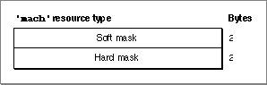

The Machine Resource
You can identify to the Finder the hardware and software components on which your control panel runs, or you can signal the Finder to call your control device function to perform this check. In either case, create a machine resource of type'mach'. A machine resource must have a resource ID of -4064.The machine resource consists of two word-sized masks: a hard and a soft mask.
Figure 8-16 shows the structure of a compiled machine resource.Figure 8-16 Structure of a compiled machine (
'mach') resource
A compiled version of a machine resource contains these elements:The Finder performs the check if you set these masks to values representing the requirements for your control panel.
- Soft mask. See Table 8-5 for a description of this mask.
- Hard mask. See Table 8-5 for a description of this mask.
If you set these masks to values indicating that the Finder is to call your control device function to perform the check, the Finder calls your function for the first time with a
- Note
- In System 6, the Control Panel does not display the icon for a control panel file if the machine resource indicates that the control panel cannot run on the current system.
macDevmessage. (See "Determining If a Control Panel Can Run on the Current System" on page 8-29 for a discussion of how to handle amacDevmessage.)Table 8-5 shows the values you use to set the machine resource masks.
For more information about the machine resource, see "Specifying the Machine Resource" on page 8-20.